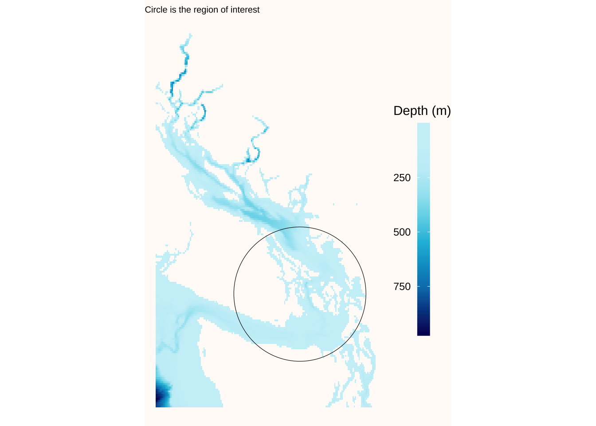

ggplot(df) +geom_tile(aes(x = x, y = y, fill = z)) +coord_sf(ylim =c(lat, lat+3), xlim =c(long, long-3), expand =FALSE) +geom_sf(data = circle, color ="black", fill =NA) +scale_fill_gradientn(colors =palette(10),labels =function(x) format(-x, big.mark =" ", trim =TRUE)) +guides(fill =guide_colorbar(label.position ="left", title ="Depth (m)")) +theme_void() +theme(legend.position ="right",legend.key.height =unit(2.5, "line"),legend.key.width =unit(0.75, "line"),plot.background =element_rect(fill ="#FFFBF8", color =NA),plot.title =element_markdown(size=7.5) ) +ggtitle("Circle is the region of interest")
Coordinate system already present. Adding new coordinate system, which will
replace the existing one.

Code
ggplot() +geom_sf(data = circle, color ="black", fill ="white") +geom_sf(data=bathy_crop, aes(color=z), size=1) +ggtitle("Puget Sound Bathymetry") +scale_color_gradientn(colors =palette(10),labels =function(x) format(-x, big.mark =" ", trim =TRUE)) +guides(color =guide_colorbar(label.position ="left", title ="Depth (m)"))